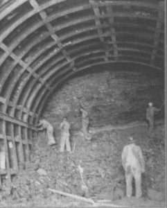
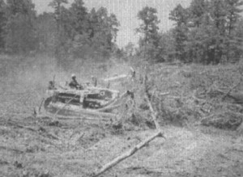
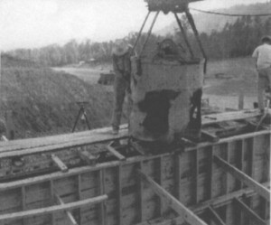

On Highway 270, about 13 miles east of Mount Ida and a mile or so west of the border separating Montgomery and Garland counties, is a road heading north up Hickory Nut Mountain to the Lake Ouachita Vista. At the very top of the mountain, about four miles, the panorama before you is Lake Ouachita, so named for an ancient Indian tribe living along the Ouachita River. Following is the story behind that vast expanse of water.
n the late 1800s the Ouachita River wound around and down through the mountains to Blakely Mountain, from where it ran a distance of 75 miles, falling 228 feet, to Arkadelphia. From Arkadelphia to Camden, 6.5 miles, it fell only 82.5 feet before continuing on to the Black River on even more level terrain. The variation in stream flow caused significant flooding downstream. Before the turn of the 20th century, the U.S. Congress authorized the first of what became many public and private surveys of the river to determine what could be done about the flooding. Recommendations for a series of dams brought a new question. Who should pay for them?
Finally, in 1910 the power generation potential of a dam was recognized, and in the early 1920s Arkansas Power and Light (now known as Entergy) began buying land for a lake reservoir. In 1923 AP&L began work on Remmel Dam which created Lake Catherine, followed by Carpenter Dam creating Lake Hamilton in Hot Springs. But economics were still an issue, and they doubted the time was right for Blakely Dam. Ultimately, in 1939 AP&L requested an economic delay on the construction of Blakely Mountain Dam which was to create Lake Ouachita. In 1941 AP&L’s permit to construct was terminated, an authorization that was passed on to the Army Corps of Engineers via a Senate flood control bill in 1944.
Between 1947 and 1952 the Ouachita River Valley was cleared for the reservoir. Owners of farms and residences did not always agree with the government appraised value of their property. As little as $27 per acre was paid. Owners could keep their timber if they got it cut immediately. As many as 18 to 29 sawmills were set up in the reservoir site to harvest the timber. Haulers were paid approximately $21 per cord to cut, load, and haul timber on their own trucks.
After the good timber was cut, clearing crews finished by cutting brush, which was either burned or left for fish cover and spawning grounds, and by topping trees that extended above 535 feet. A fish-finder can see the trees still standing on the lake bottom; the tops of some may rise above the surface during low water periods. County and state roads, including short portions of State Highway 27 and U.S. Highway 270 were rerouted. Cemeteries within the reservoir were moved to new locations during the summer of 1952. Due to the acidic soil, few actual remains were found in the 1200 or so graves exhumed, but personal items found in burial sites included a man’s watch, a celluloid collar and cuffs, and a mustache cup of ancient vintage. Concealed under the water are a few small towns and roads, the places where some folks were born, and the land that produced a 14-pound sweet potato, a ribbon winner at the state fair.
A 200-foot-wide emergency spillway was built between 1947 and 1948. Next was the two-year construction of a flood control tunnel and power tunnel which were used to redirect the river while the dam was being built.
Construction of the dam itself, along with the concrete intake structures, began on March 29, 1950. In 1952 a 251-foot-high, 1100-foot-wide dam of almost four million cubic yards of rolled earth was completed. The flood gates were closed, water began to back up, and Lake Ouachita was born. Construction of the power plant began in 1952, and hydroelectric power was first produced and sold under contract to AP&L in 1955. On July 4, 1956, the Army Corps of Engineers formally turned over the use of the dam and lake to Arkansas. Final cost of the Blakely Mountain Dam was over $30,000,000 and represented more than nine years of actual construction.
At the optimum lake level of 578 feet above sea level, the lake covers 40,000 plus acres, contains over 419 billion gallons of water, has over 690 miles of shoreline, and harbors many islands. The lake level must reach 592 feet to enter the emergency spillway. While the water has never overflowed, there was a close call in January of 1983 when the level was only .8 of a foot short.
The Corps of Engineers oversees about 66,000 acres of lake and shoreline. The shore and the surrounding Ouachita National Forest are limited to a minimal development of resorts, marinas, and campgrounds provided by the Army Corps of Engineers, the U.S. Forest Service, and private individuals. The economics are now different. Since the gates closed and the final flood created Lake Ouachita, the Blakely Dam powerhouse has generated multiple millions of dollars more than the cost of construction, supplanting the need for oil, and generating enough power to supply 38,000 homes with electricity. In 1954, not long after the lake came to be, an estimated 220,000 people visited the Lake Ouachita area. Today the number of annual visitors exceeds eight million, benefiting local businesses along with fishermen and vacationers enjoying the variety of recreational opportunities that only a clean, clear lake and a scenic mountain setting can provide.